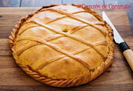
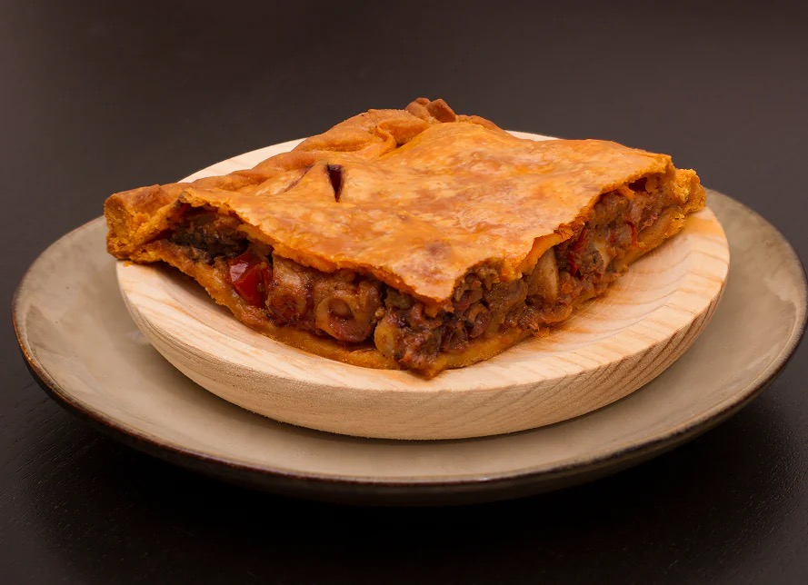
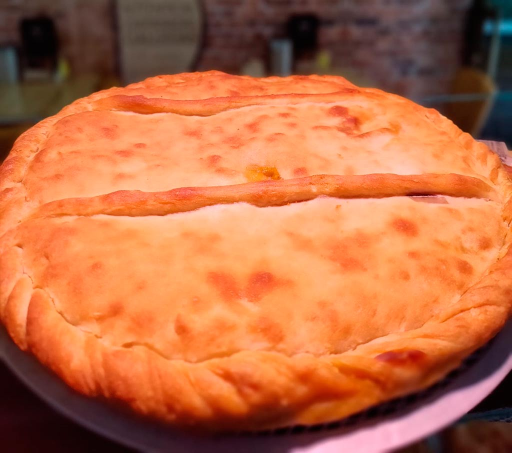

Empanada gallega

La empanada es una de las preparaciones culinarias más antiguas y versátiles de Galicia. Su función originaria estaba vinculada a la necesidad de disponer de un alimento nutritivo, fácil de transportar y duradero para pastores, peregrinos y trabajadores del campo.
La masa tradicional se elabora utilizando como base la harina de trigo (o maíz en algunas zonas), agua, levadura y parte del aceite sobrante del sofrito (zaragallada). Este sofrito es fundamental y se prepara lentamente con cebolla, pimiento y aceite de calidad.
En cuanto a los rellenos, la empanada gallega brilla por su capacidad de aprovechamiento. Aunque las más conocidas son las de bonito, bacalao con pasas, carne o zamburiñas, tradicionalmente se ha elaborado con cualquier excedente de la costa o el huerto, demostrando la riqueza de la cocina popular.
Galería del proceso


